פרשת השבוע
משחקים, שירים, מצגות ושיעורים לכל פרשה – מבראשית ועד דברים, מסודרים לפי סדר הפרשיות
206 פריטים
בראשית · פרשת בראשית (2)

למה כלב נקרא כלב? סודות השמות שהאדם הראשון קרא לבעלי החיים 2025
למה כלב נקרא כלב? הסודות המדהימים מאחורי שמות בעלי החיים האם תהיתם פעם למה דווקא כלב נקרא כלב? או מה הקשר בי…

הרש"י הראשון - מדוע התורה מתחילה עם ארץ ישראל
מערך שיעורים שנתי: למה התורה מתחילה ב"בראשית"? מבוא למורה מורה יקר/ה, מערך שיעורים זה נועד להעמיק יחד עם התלמ…
בראשית · נח (1)
בראשית · לך לך (2)
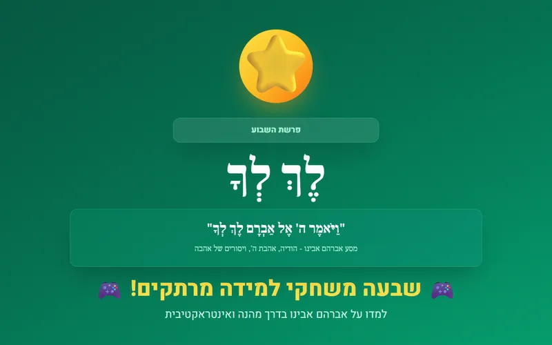
פרשת לך לך
⭐ פרשת השבוע לֶךְ לְךָ "וַיֹּאמֶר ה' אֶל אַבְרָם לֶךְ לְךָ" מסע אברהם אבינו - הודיה, אהבת ה', ויסורים של אהבה …
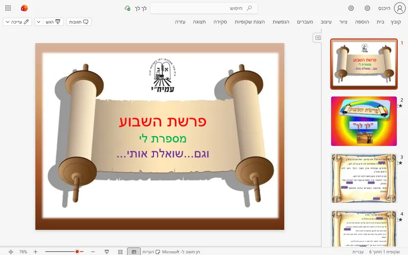
מצגת גלה את הנעלם
בראשית · וירא (22)
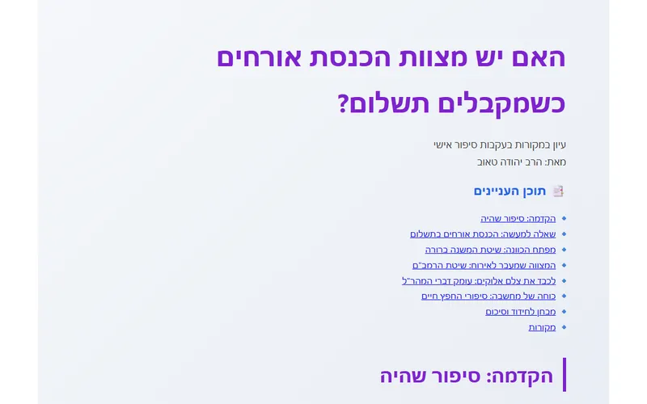
האם יש מצוות הכנסת אורחים כשמקבלים תשלום?
עיון במקורות בעקבות סיפור אישי מאת: הרב יהודה טאוב 📑 תוכן העניינים הקדמה: סיפור שהיה שאלה למעשה: הכנסת אורחים …
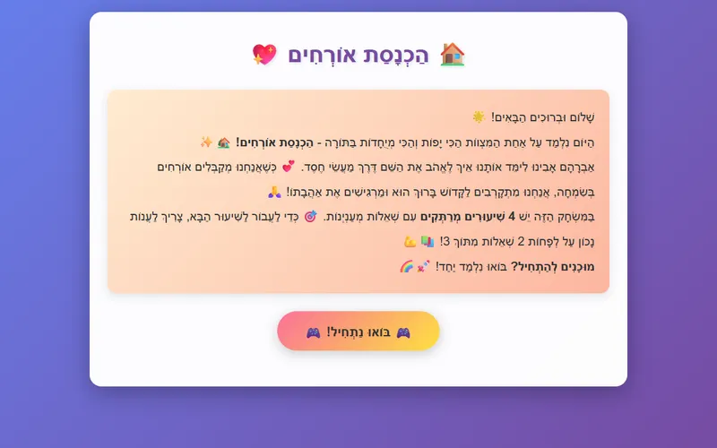
הַכְנָסַת אוֹרְחִים
מִשְׂחָק לִמּוּדִי 💖
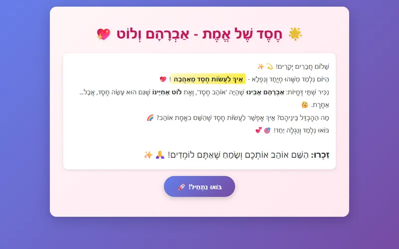
חֶסֶד שֶׁל אֱמֶת - אַבְרָהָם וְלוֹט
💖
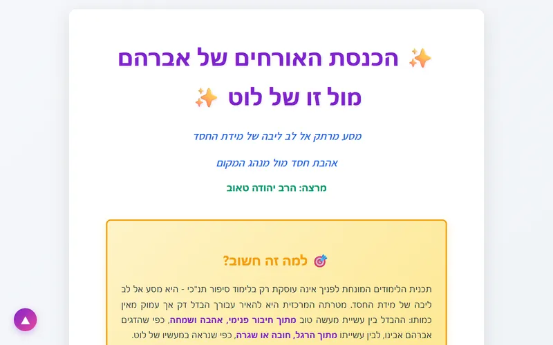
הכנסת האורחים של אברהם מול זו של לוט
✨ מסע מרתק אל לב ליבה של מידת החסד אהבת חסד מול מנהג המקום מרצה: הרב יהודה טאוב 🎯 למה זה חשוב? תכנית הלימודים …
אהבת חסד מסע לימוד אינטראקטיבי
אהבת חסד - משחק למידה אינטראקטיבי
פרשת וירא
🙏 פרשת השבוע וַיֵּרָא "וַיֵּרָא אֵלָיו ה׳" סודות התפילה שפותחת שערי שמים 🙏 שני משחקי למידה על סוד התפילה! ✨ למ…
פרשת וירא 2
אהבה והודיה - פרשת וירא 💖 פרשת השבוע וַיֵּרָא אַהֲבָה וְהוֹדָיָה שלושה שיעורים על כוח הלב והמילים 💖 מסע של אהב…
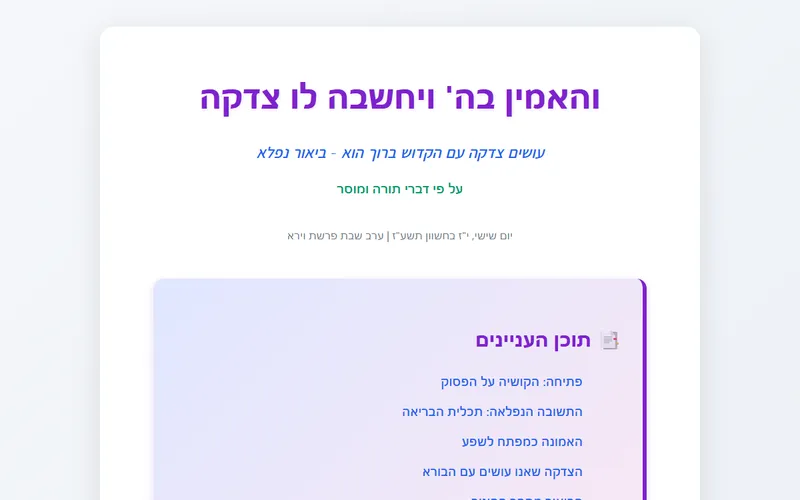
והאמין בה' ויחשבה לו צדקה
עושים צדקה עם הבורא והאמין בה' ויחשבה לו צדקה עושים צדקה עם הקדוש ברוך הוא - ביאור נפלא על פי דברי תורה ומוסר …
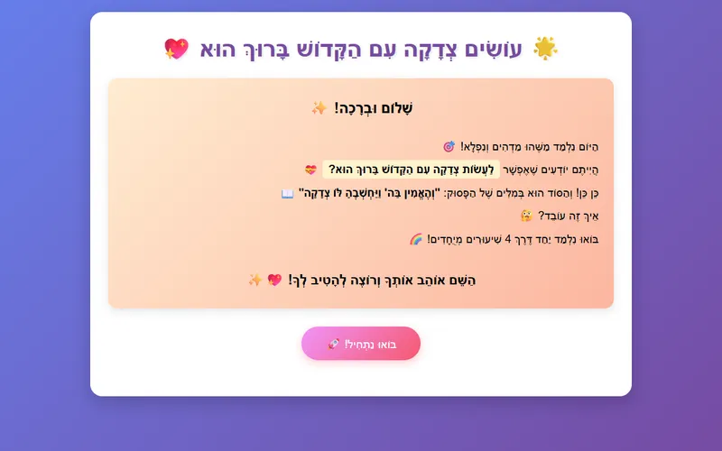
עושים צדקה עם השם – משחק למידה
עוֹשִׂים צְדָקָה עִם הַקָּדוֹשׁ בָּרוּךְ הוּא 💖
עושים צדקה עם השם – שיר
שיר
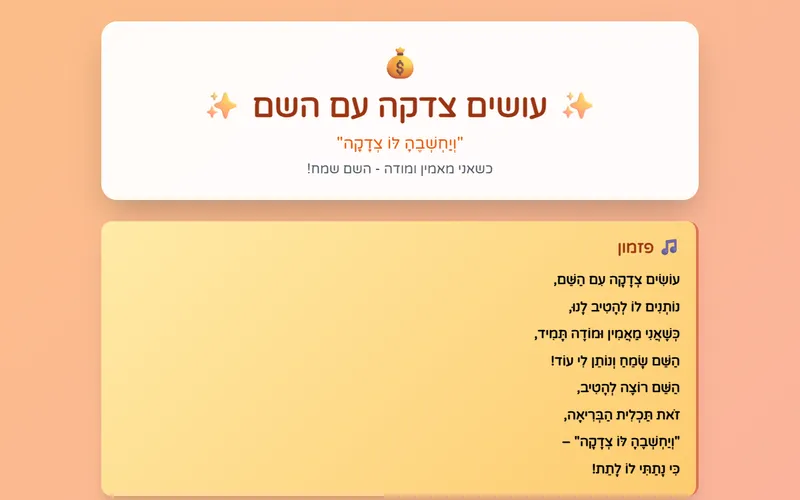
עושים צדקה עם השם – מצגת לשיר
עושים צדקה עם השם 💰 ✨ עושים צדקה עם השם ✨ "וְיַחְשְׁבֶהָ לּוֹ צְדָקָה" כשאני מאמין ומודה - השם שמח! 🎵 פזמון עו…
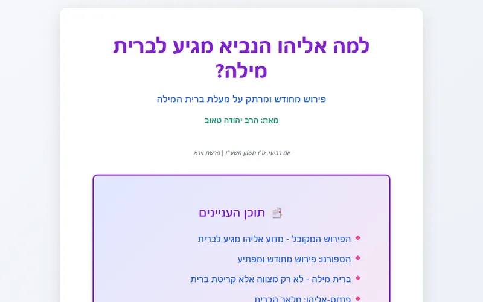
ברית מילה – תוכן השיעור
למה אליהו הנביא מגיע לברית מילה - פירוש מחודש למה אליהו הנביא מגיע לברית מילה? פירוש מחודש ומרתק על מעלת ברית …
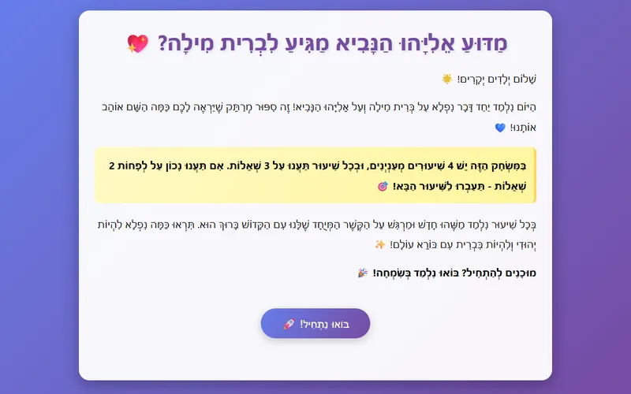
ברית מילה – משחק
מַדּוּעַ אֵלִיָּהוּ הַנָּבִיא מַגִּיעַ לִבְרִית מִילָה? 💖
ברית מילה – מצגת לשיר
אליהו מלאך הברית 👶 ✨ אליהו מלאך הברית ✨ "זאת ברית אהבה נצחית!" ברית מילה - שני צדדים כורתים ברית 🎵 פזמון פתיחה…
ברית מילה – שיר סיכום
שיר סיכום אליהו מלאך הברית 👶 ✨ אליהו מלאך הברית ✨ "זאת ברית אהבה נצחית!" ברית מילה - שני צדדים כורתים ברית 🎵 פ…
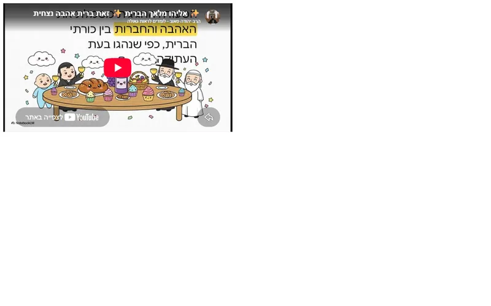
ברית מילה – סרטון סיכום
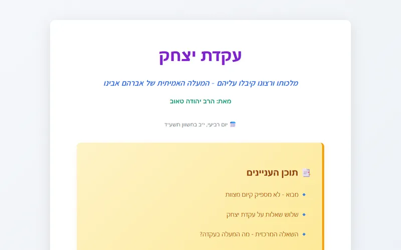
עקידת יצחק – דף לימוד
עקדת יצחק - מלכותו ורצונו קיבלו עליהם עקדת יצחק מלכותו ורצונו קיבלו עליהם - המעלה האמיתית של אברהם אבינו מאת: …
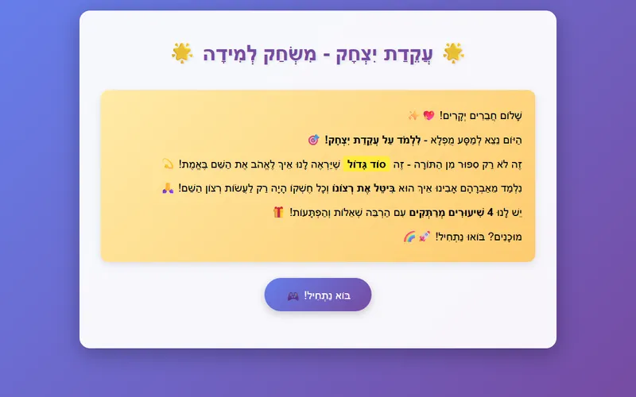
עקידת יצחק – משחק למידה
עֲקֵדַת יִצְחָק - מִשְׂחַק לְמִידָה 💖
עקידת יצחק – מצגת לשיר
מלכותו ורצונו 👑 ✨ מלכותו ורצונו ✨ "קבלו עליהם בשמחה ובאהבה גדולה" לא רק לעשות - לרצות לעשות! 🎼 הקדמה [מוזיקה מ…
עקידת יצחק – שיר סיכום
שיר סיכום מלכותו ורצונו 👑 ✨ מלכותו ורצונו ✨ "קבלו עליהם בשמחה ובאהבה גדולה" לא רק לעשות - לרצות לעשות! 🎼 הקדמה…
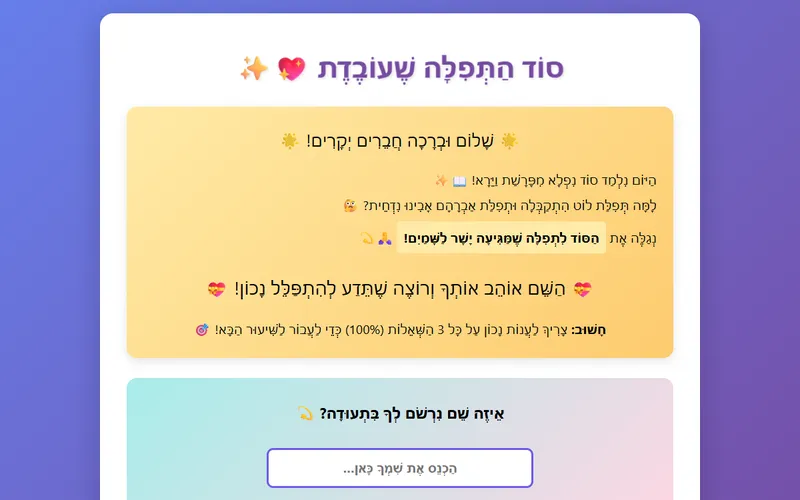
סוֹד הַתְּפִלָּה שֶׁעוֹבֶדֶת
💖
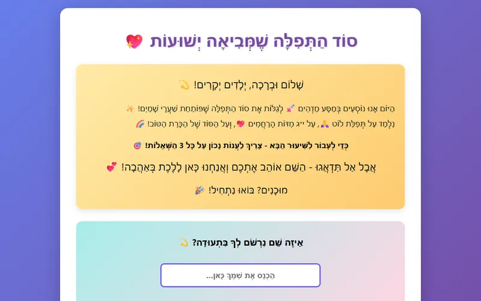
סוֹד הַתְּפִלָּה שֶׁמְּבִיאָה יְשׁוּעוֹת
💖
בראשית · חיי שרה (12)
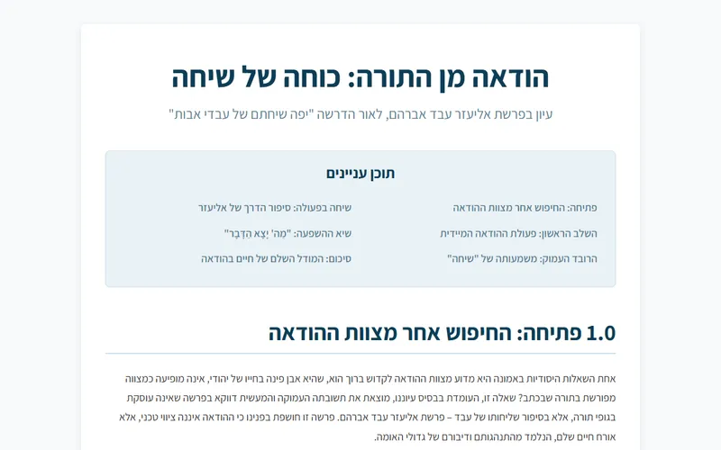
הודאה מן התורה מנין
הודאה מן התורה: כוחה של שיחה הודאה מן התורה: כוחה של שיחה עיון בפרשת אליעזר עבד אברהם, לאור הדרשה "יפה שיחתם ש…
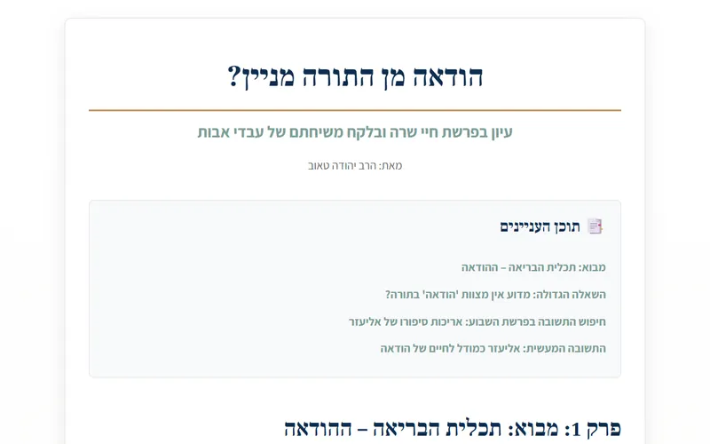
שהחיינו - על מה
הודאה מן התורה מניין? | שיעור מאת הרב יהודה טאוב הודאה מן התורה מניין? עיון בפרשת חיי שרה ובלקח משיחתם של עבדי…
משחק ההודיה המסע של אליעזר
מִשְׂחַק הַתּוֹדָה! מִשְׂחַק הַתּוֹדָה: הַמַּסָּע שֶׁל אֱלִיעֶזֶר שָׁלוֹם לָכֶם, אַלּוּפִים וְאַלּוּפוֹת! 🥳 מו…
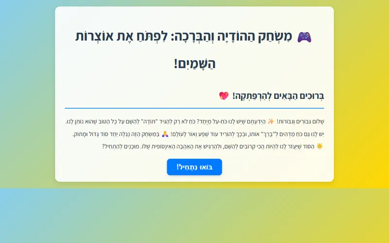
מִשְׂחַק הַהוֹדָיָה וְהַבְּרָכָה: לִפְתֹּחַ אֶת אוֹצְרוֹת הַשָּׁמַיִם!
ִפְתֹּחַ אֶת אוֹצְרוֹת הַשָּׁמַיִם! בְּרוּכִים הַבָּאִים לְהַרְפַּתְקָה! 💖 שָׁלוֹם גִּבּוֹרִים וְגִבּוֹרוֹת! ✨…
הַמַּסָּע הַמֻּפְלָא שֶׁל אֱלִיעֶזֶר: לִלְמֹד לְהוֹדוֹת לַה'!
📝 הַמַּסָּע הַמֻּפְלָא שֶׁל אֱלִיעֶזֶר: לִלְמֹד לְהוֹדוֹת לַה'! בָּרוּךְ הַבָּא לְמַסַּע שֶׁל תּוֹדָה! 🌟 שָׁלו…
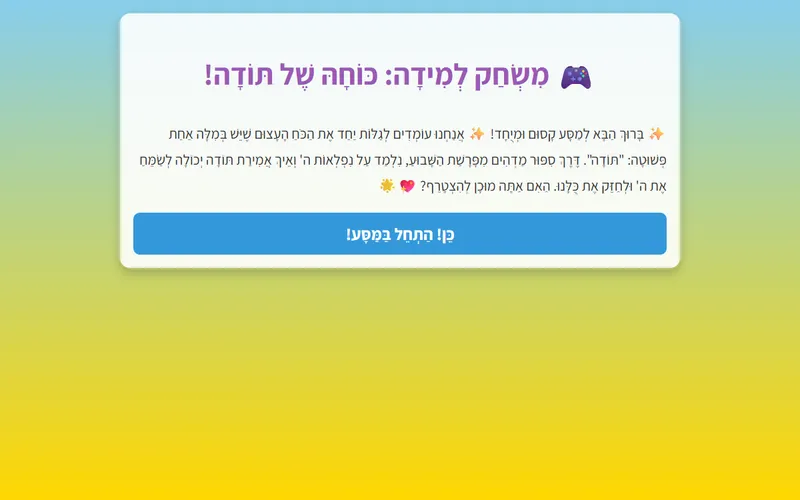
מִשְׂחַק לְמִידָה: כּוֹחָהּ שֶׁל תּוֹדָה - סִפּוּר נִפְלְאוֹת ה' מִפָּרָ
שַׁת חַיֵּי שָׂרָה 🎮 מִשְׂחַק לְמִידָה: כּוֹחָהּ שֶׁל תּוֹדָה! ✨ בָּרוּךְ הַבָּא לְמַסָּע קָסוּם וּמְיֻחָד! ✨ …
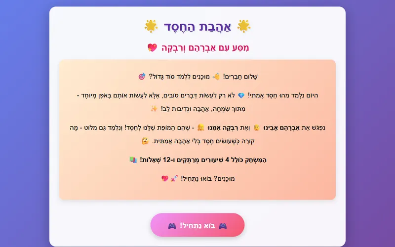
אהבת חסד - מסע עם אברהם ורבקה
🌟 אַהֲבַת הַחֶסֶד - מִסַּע עִם אַבְרָהָם וְרִבְקָה 💖
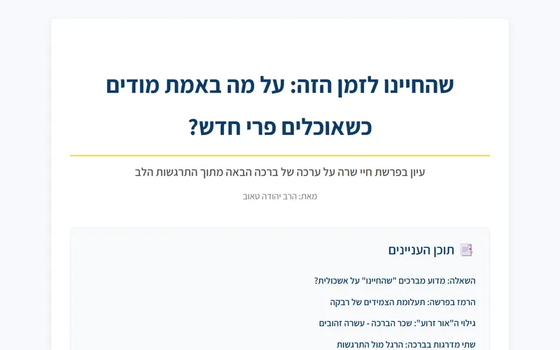
הודאה מן התורה - כוחה של שירה
שהחיינו לזמן הזה - ערכה של ברכה מתוך הלב שהחיינו לזמן הזה: על מה באמת מודים כשאוכלים פרי חדש? עיון בפרשת חיי ש…
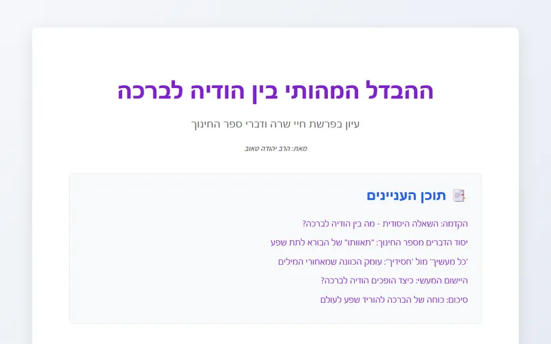
ההבדל המהותי בין הודיה לברכה
| הרב יהודה טאוב ההבדל המהותי בין הודיה לברכה עיון בפרשת חיי שרה ודברי ספר החינוך מאת: הרב יהודה טאוב 📑 תוכן ה…
שיר יפה שיחתן של עבדי אבות
יָפָה שִׂיחָתָן - שיר אליעזר והודיה 📜 ✨ יָפָה שִׂיחָתָן שֶׁל עַבְדֵי אָבוֹת ✨ אליעזר מלמד אותנו את דרך ההודיה …
פרשת חיי שרה – שירים
שירים
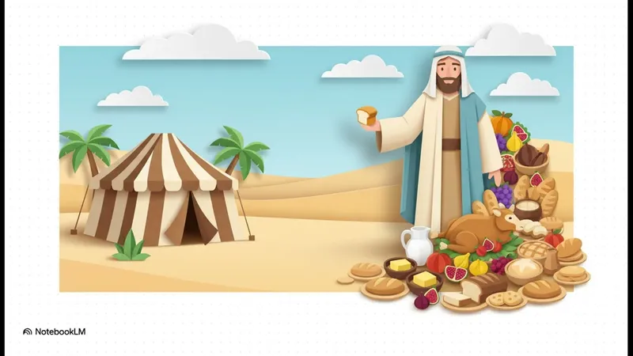
פרשת חיי שרה – סרטונים
סרטונים
בראשית · תולדות (9)
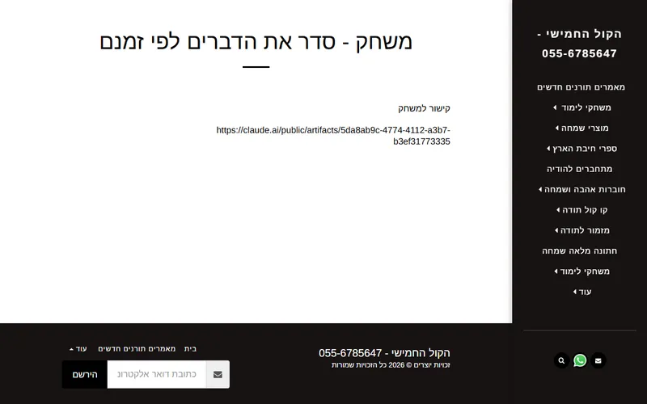
פרשת תולדות - סדר את הדברים לפי זמנים
משחק - סדר את הדברים לפי זמנם - הקול החמישי - 055-6785647 הקול החמישי - 055-6785647 מאמרים תורנים חדשים משחקי …
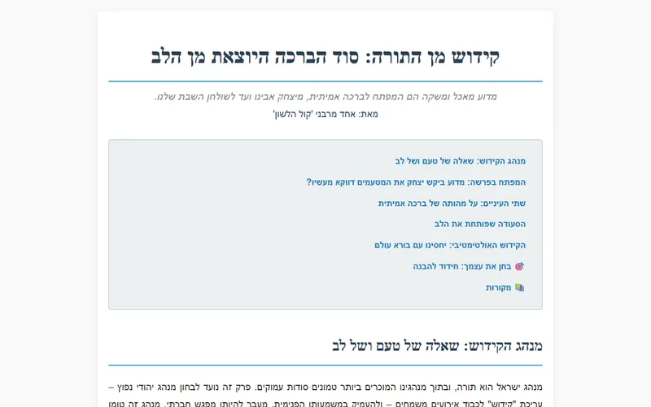
קידוש מן התורה
: סוד הברכה היוצאת מן הלב קידוש מן התורה: סוד הברכה היוצאת מן הלב מדוע מאכל ומשקה הם המפתח לברכה אמיתית, מיצחק…
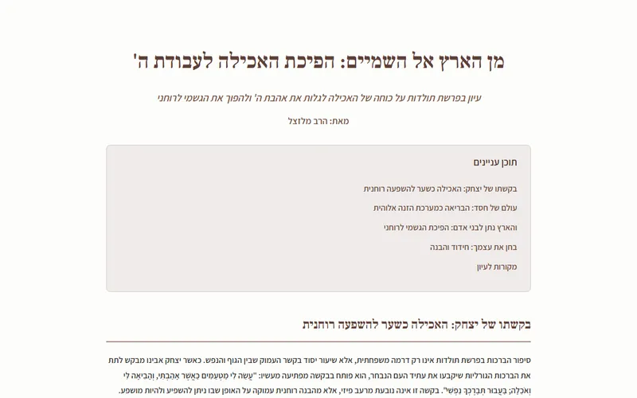
הפכת האכילה לעבודת השם
מן הארץ אל השמיים: הפיכת האכילה לעבודת ה' מן הארץ אל השמיים: הפיכת האכילה לעבודת ה' עיון בפרשת תולדות על כוחה …
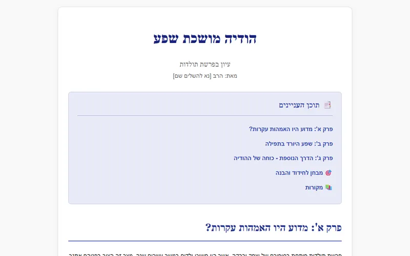
הודיה מושכת שפע
| עיון בפרשת תולדות הודיה מושכת שפע עיון בפרשת תולדות מאת: הרב [נא להשלים שם] 📑 תוכן העניינים פרק א': מדוע היו…
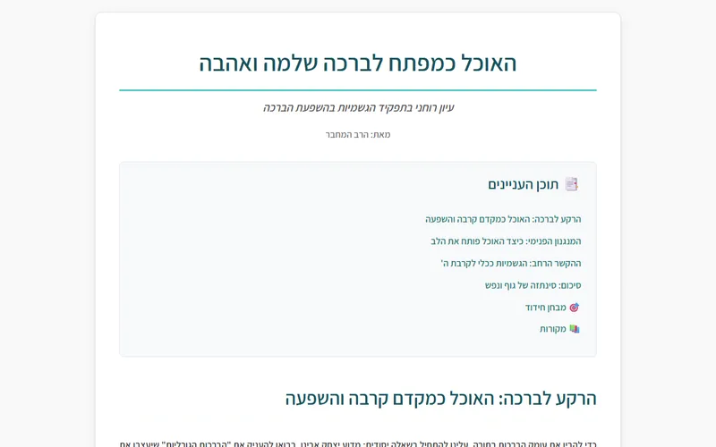
האוכל כמפתח לברכה שלמה
ואהבה האוכל כמפתח לברכה שלמה ואהבה עיון רוחני בתפקיד הגשמיות בהשפעת הברכה מאת: הרב המחבר 📑 תוכן העניינים הרקע …
מאמר מגשמיות לרוחניות
מגשמיות לרוחניות: כיצד הופכים את צלחת האוכל למפגש עם אלוקים 🍞 מגשמיות לרוחניות 🍷 כיצד הופכים את צלחת האוכל למפ…
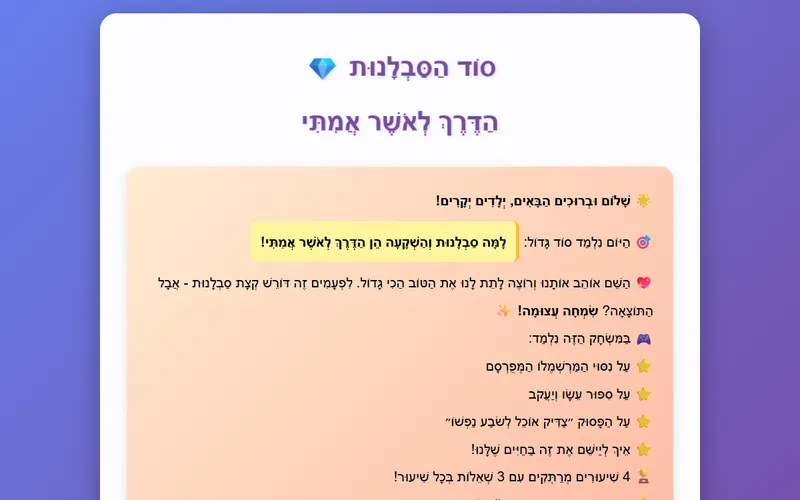
סוֹד הַסַּבְלָנוּת הַדֶּרֶךְ לְאֹשֶׁר אֲמִתִּי
סוֹד הַסַּבְלָנוּת - הַדֶּרֶךְ לְאֹשֶׁר אֲמִתִּי 💎
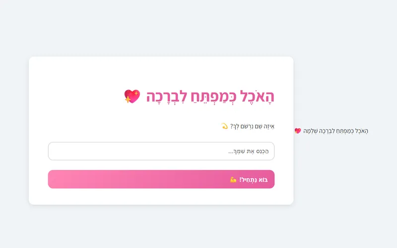
הָאֹכֶל כְּמַפְתֵּחַ לִבְרָכָה
שְׁלֵמָה 💖 האוכל כמפתח לברכה 💖
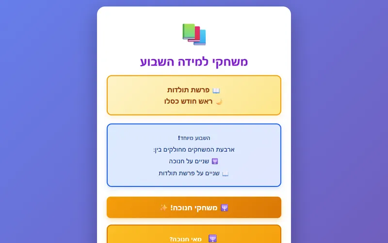
משחקי למידה פרשת תולדות
🎮 משחקי למידה - פרשת תולדות וראש חודש כסלו 📚 משחקי למידה השבוע 📖 פרשת תולדות 🌙 ראש חודש כסלו השבוע מיוחד! ארבע…
בראשית · ויצא (2)
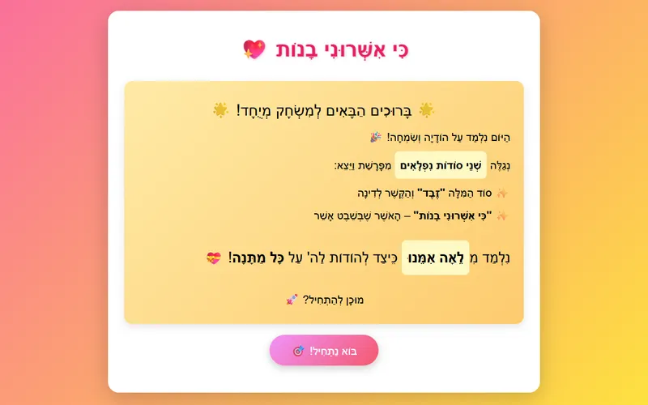
כִּי אִשְּׁרוּנִי בָנוֹת
💖
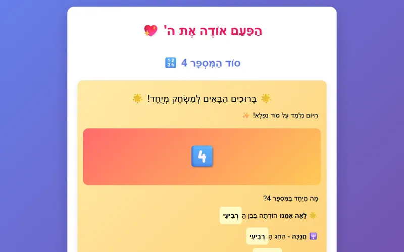
הַפַּעַם אוֹדֶה אֶת ה' - סוֹד הַמִּסְפָּר 4
💖
בראשית · וישלח (2)
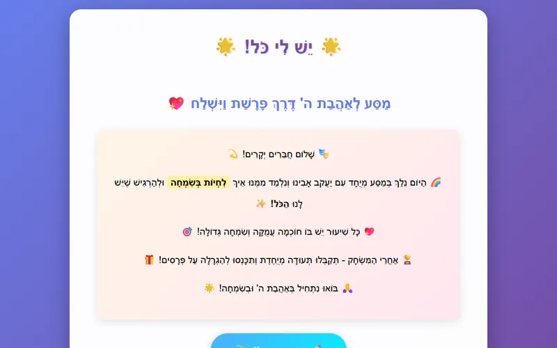
יש לי כל
יֵשׁ לִי כֹּל! - מַסַּע לְאַהֲבַת ה' 💖
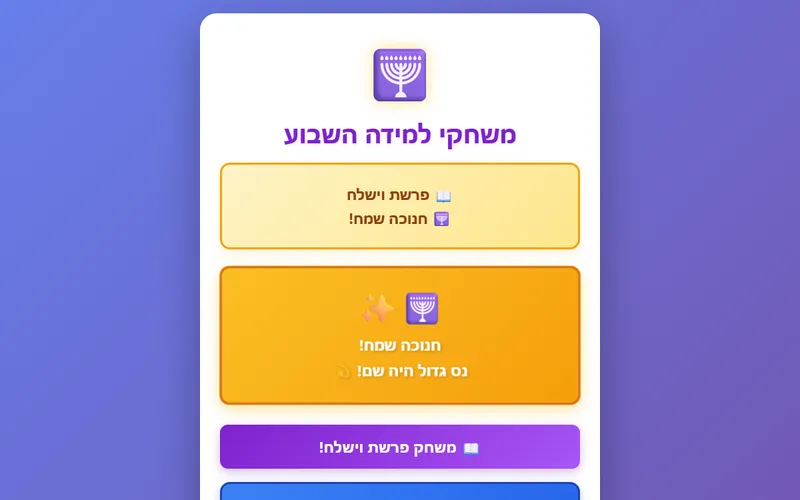
משחקי פרשת וישלח
🎮 משחקי למידה - פרשת וישלח וחנוכה 🕎 משחקי למידה השבוע 📖 פרשת וישלח 🕎 חנוכה שמח! 🕎✨ חנוכה שמח! נס גדול היה שם! …
בראשית · וישב (1)
בראשית · ויגש (3)
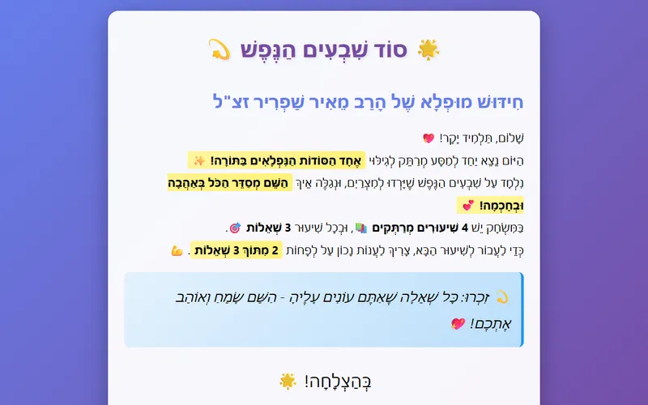
סוֹד שִׁבְעִים הַנֶּפֶשׁ חִידּוּשׁ הָרַב מֵאִיר שַׁפְרִיר זצ"ל
ל
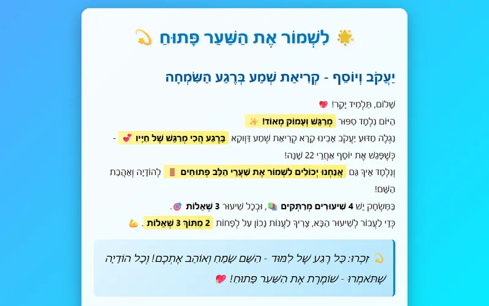
לִשְׁמוֹר אֶת הַשַּׁעַר פָּתוּחַ יַעֲקֹב וְיוֹסֵף
ֵף
פירוש נפלא - לסוד ה 70 נפש
סוד ה-70 נפש שירדו למצרים - חידוש בפרשת ויגש 📜 חידוש תורני מרתק סוד ה-70 נפש שירדו למצרים חידוש מופלא בפרשת וי…
בראשית · ויחי (2)
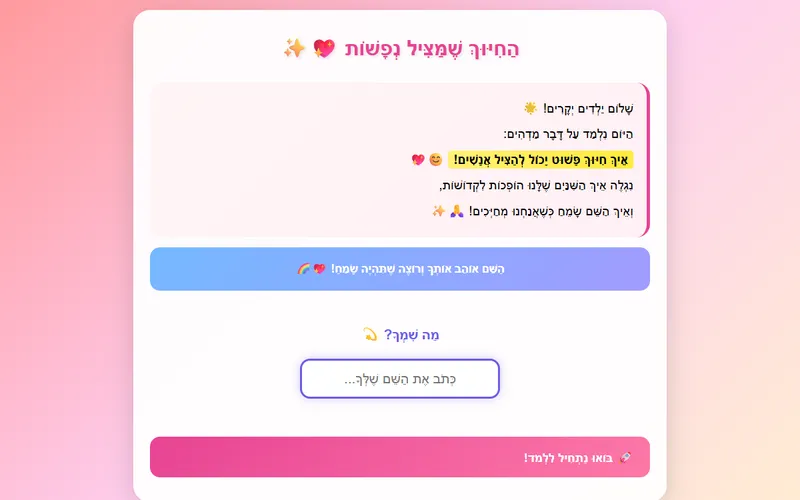
החיוך שמציל נפשות
הַחִיּוּךְ שֶׁמַּצִּיל נְפָשׁוֹת 💖✨
בחרבי ובקשתי
בְּחַרְבִּי וּבְקַשְׁתִּי - כּוֹחָהּ שֶׁל תְּפִילָּה אִישִׁית 💖
שמות · פרשת שמות (39)
פרשת שמות - משחקי למידה
קטלוג משחקי למידה – פרשת שמות 🎮 קטלוג קישורים מסודר משחקי למידה על פרשת שמות כל דפי האתר מסודרים לפי נושאים ול…
שמות - משחק ושיר לכל פרק
פרשת שמות - מסע הגאולה 🔥 ספר שמות - פרשת השבוע שְׁמוֹת מִמִּצְרַיִם לִגְאוּלָה מסע הגאולה של עם ישראל 🔥 5 פרקי…
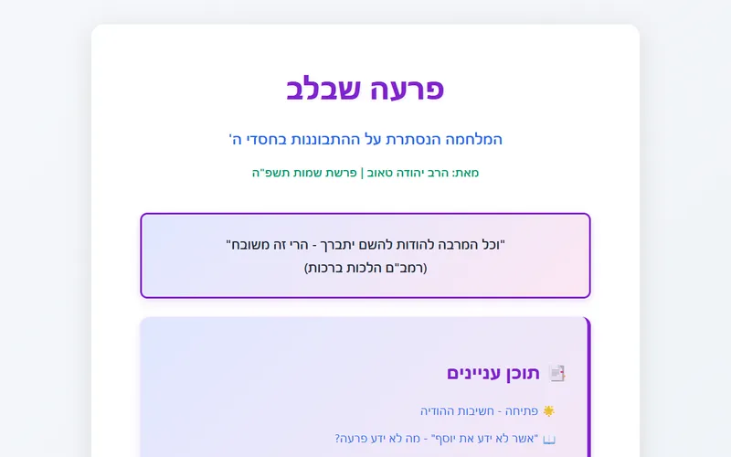
פרעה שבלב – דף לימוד
פרעה שבלב - המלחמה על ההתבוננות בחסדי ה' פרעה שבלב המלחמה הנסתרת על ההתבוננות בחסדי ה' מאת: הרב יהודה טאוב | פ…
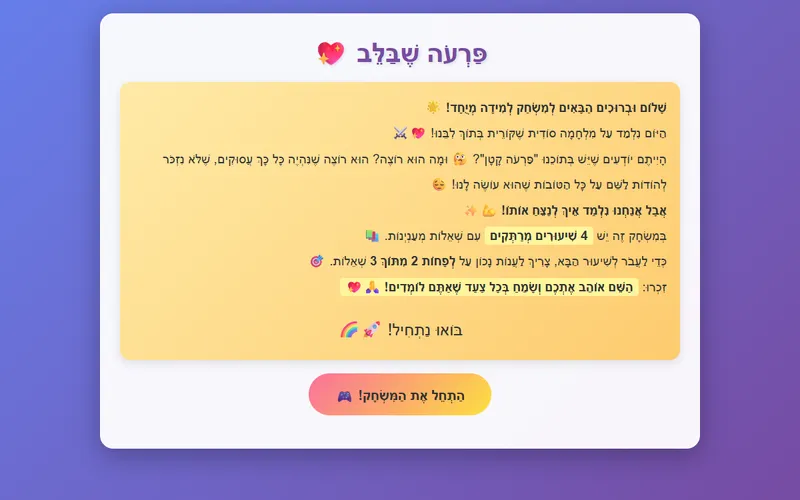
פרעה שבלב – משחק למידה
פַּרְעֹה שֶׁבַּלֵּב 💖 - מִשְׂחַק לְמִידָה תּוֹרָנִי
פרעה שבלב – מצגת לשיר
פרעה שבלב 🔥 ✨ פרעה שבלב ✨ "המלחמה על ההודיה" לא נותן לנו זמן להודות - אבל נעצור רגע! 🎸 הקדמה [גיטרה אקוסטית מש…
פרעה שבלב – שיר
שיר פרעה שבלב 🔥 ✨ פרעה שבלב ✨ "המלחמה על ההודיה" לא נותן לנו זמן להודות - אבל נעצור רגע! 🎸 הקדמה [גיטרה אקוסטי…
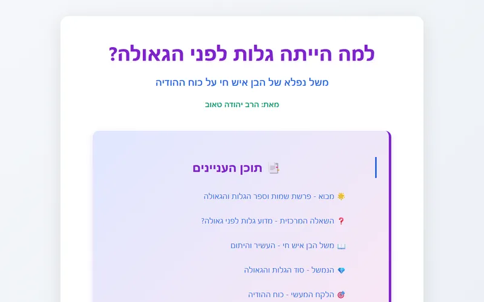
סיבת הגלות – תוכן השיעור
למה הייתה גלות לפני הגאולה? | משל הבן איש חי למה הייתה גלות לפני הגאולה? משל נפלא של הבן איש חי על כוח ההודיה …
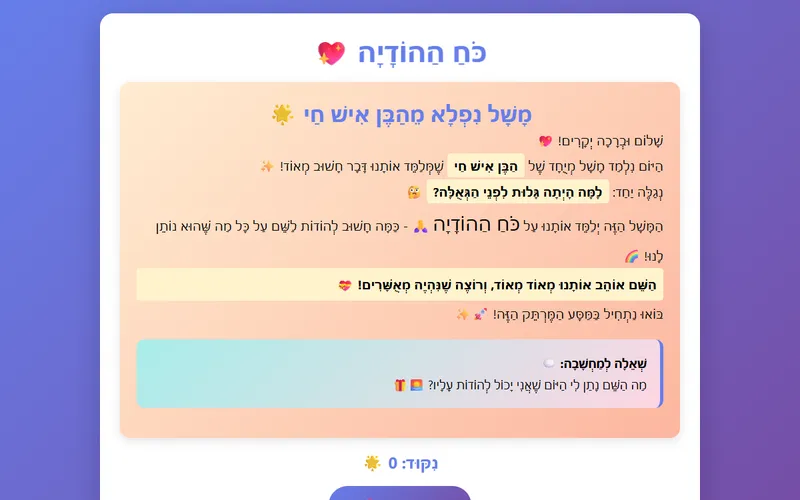
סיבת הגלות – משחק למידה
כֹּחַ הַהוֹדָיָה 💖 - מִשְׂחַק לְמִידָה תּוֹרָנִי
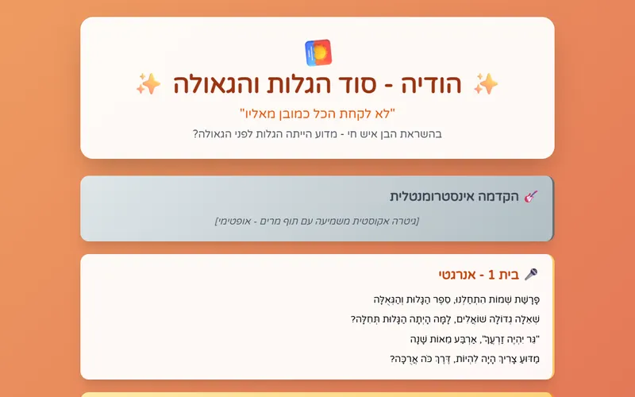
סיבת הגלות – מצגת לשיר
הודיה - סוד הגלות והגאולה 🌅 ✨ הודיה - סוד הגלות והגאולה ✨ "לא לקחת הכל כמובן מאליו" בהשראת הבן איש חי - מדוע ה…
סיבת הגלות – שיר
שיר
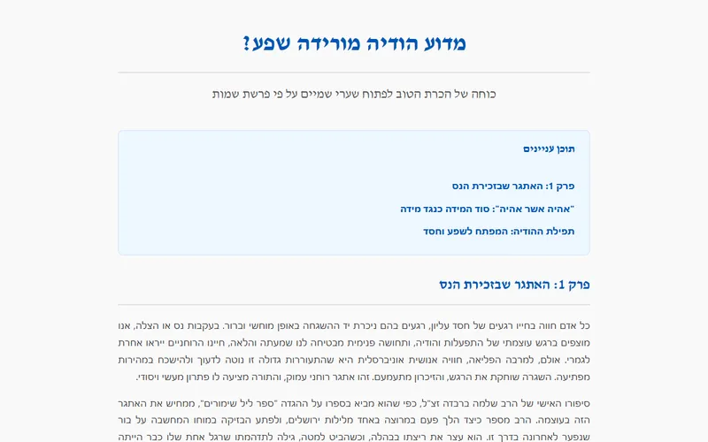
ההודיה מורידה שפע – תוכן השיעור
מדוע הודיה מורידה שפע? מדוע הודיה מורידה שפע? כוחה של הכרת הטוב לפתוח שערי שמיים על פי פרשת שמות תוכן עניינים …
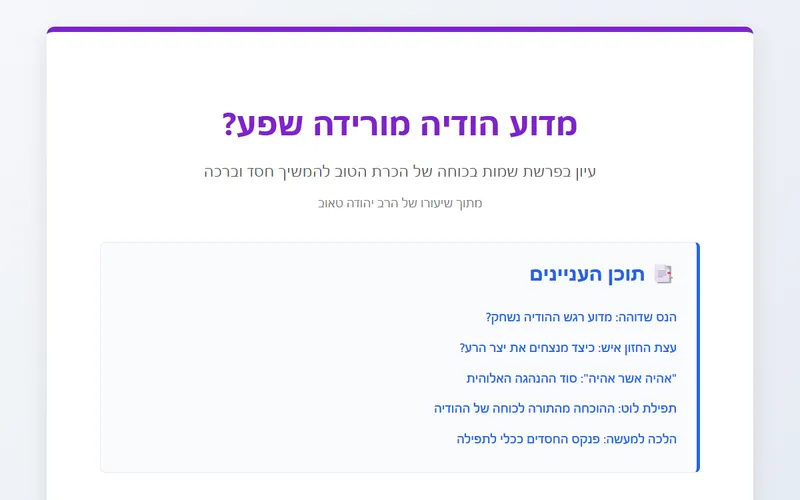
ההודיה מורידה שפע – תוכן שיעור - 2
מדוע הודיה מורידה שפע? | מאמר מאת הרב יהודה טאוב מדוע הודיה מורידה שפע? עיון בפרשת שמות בכוחה של הכרת הטוב להמ…
ההודיה מורידה שפע – מצגת לשיר
זֵכֶר עָשָׂה לְנִפְלְאוֹתָיו 📖 ✨ זֵכֶר עָשָׂה לְנִפְלְאוֹתָיו ✨ "אני כותב כל חסד וחסד" הסוד של ההודיה שמורידה …
ההודיה מורידה שפע – שיר
שיר זֵכֶר עָשָׂה לְנִפְלְאוֹתָיו 📖 ✨ זֵכֶר עָשָׂה לְנִפְלְאוֹתָיו ✨ "אני כותב כל חסד וחסד" הסוד של ההודיה שמור…
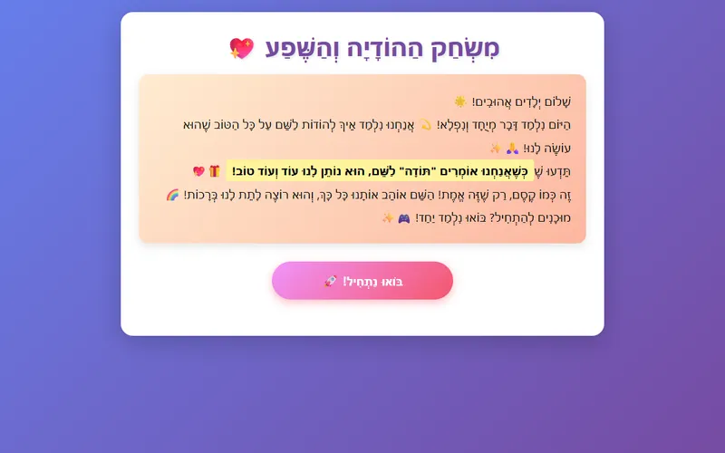
ההודיה מורידה שפע – משחק למידה
מִשְׂחַק הַהוֹדָיָה וְהַשֶּׁפַע 💖
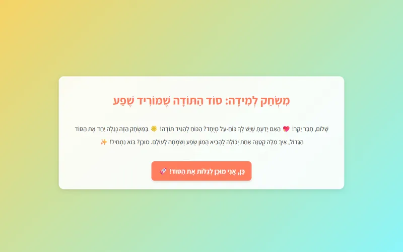
ההודיה מורידה שפע – משחק
מִשְׂחַק סוֹד הַתּוֹדָה מִשְׂחַק לְמִידָה: סוֹד הַתּוֹדָה שֶׁמּוֹרִיד שֶׁפַע שָׁלוֹם, חָבֵר יָקָר! 💖 הַאִם יָד…
משחק חקירה בבין אדם לחבירו
מִשְׂחַק הַתּוֹדָה הַגָּדוֹל 🎮 מִשְׂחַק הַתּוֹדָה הַגָּדוֹל 🎮 בְּרוּכִים הַבָּאִים, יְלָדִים יְקָרִים! 💖 הַיּו…
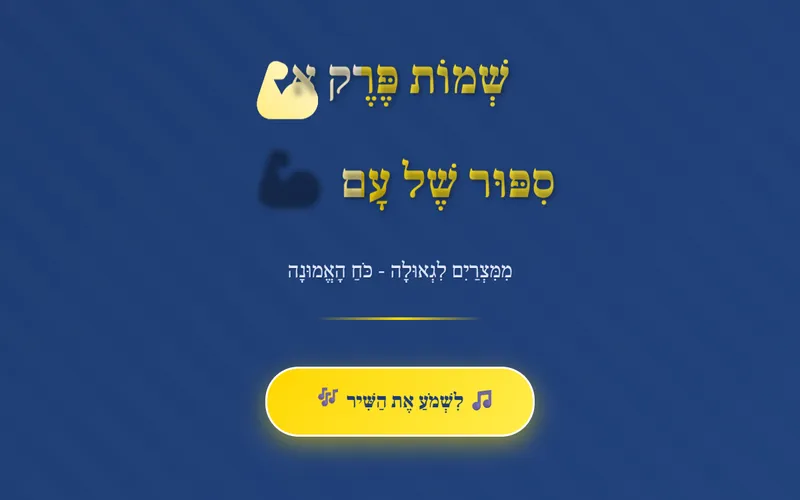
שירים לסיום פרשת שמות – פרק א
שְׁמוֹת פֶּרֶק א - סִפּוּר שֶׁל עָם שְׁמוֹת פֶּרֶק א סִפּוּר שֶׁל עָם 💪 מִמִּצְרַיִם לִגְאוּלָה - כֹּחַ הָאֱמו…
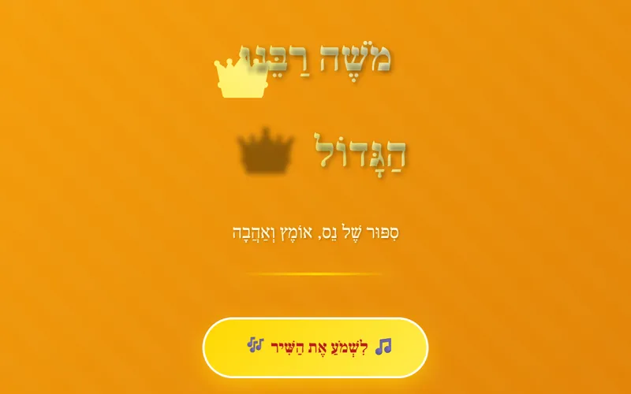
שמות פרק ב
מֹשֶׁה רַבֵּנוּ הַגָּדוֹל מֹשֶׁה רַבֵּנוּ הַגָּדוֹל 👑 סִפּוּר שֶׁל נֵס, אוֹמֶץ וְאַהֲבָה 🎵 לִשְׁמֹעַ אֶת הַשִּ…
שמות פרק ג
סְנֶה בּוֹעֵר בָּאֵשׁ - שִׁיר שִׂמְחָה 📜 📜 📜 📜 📜 📜 סְנֶה בּוֹעֵר בָּאֵשׁ! 🔥 שִׁיר שִׂמְחָה עַל הִתְגַּלּוּת ה'…
שמות פרק ד
מַאֲמִינִים בְּנֵי מַאֲמִינִים 📜 📜 📜 📜 📜 📜 מַאֲמִינִים בְּנֵי מַאֲמִינִים ✨ זֶרַע אַבְרָהָם יִצְחָק וְיַעֲקֹב …
שמות פרק ה
שַׁלַּח אֶת עַמִּי - כֹּה אָמַר הַשֵּׁם 📜 📜 📜 📜 📜 📜 שַׁלַּח אֶת עַמִּי! 💪 כֹּה אָמַר הַשֵּׁם אֱלֹהֵי יִשְׂרָאֵ…
סיום הפרשה
מִמִּצְרַיִם יָצָאנוּ - סיום פרשת שמות ✨ מִמִּצְרַיִם יָצָאנוּ לְחֵרוּת גְּדוֹלָה ✨ לכבוד סיום פרשת שמות עם ני…
שיר הסיום מיוטיוב
שיר "רַךְ כַּקָּנֶה"
רך כקנה 🌾 שיר ילדים שמח 🌾 רַךְ כַּקָּנֶה 🌾 שיר ילדים שמח על גמישות, רוגע, ושמחה 💚 🪕 🌿 ☀️ 🎶 אינטרו עליז [Upbeat…
אֶהְיֶה אֲשֶׁר אֶהְיֶה - הַסּוֹד הַגָּדוֹל שֶׁל הַחִיּוּךְ
💖 נִקּוּד: 0/12 🌟
פּוֹעָה - הַסּוֹד שֶׁל מִרְיָם הַנְּבִיאָה
💖 נִקּוּד: 0/12 🌟
שמות פרק ד
, פסוקים יח-כג בְּנִי בְכֹרִי יִשְׂרָאֵל מסע משה רבינו לגאולת ישראל וְאָמַרְתָּ אֶל פַּרְעֹה כֹּה אָמַר ה' בְּ…
שמות פרק ד - מצגות ומשחקים
שמות פרק ד - שליחות משה רבינו 🔥 שליחות משה רבינו ספר שמות פרק ד ממדין לגאולת ישראל ממצרים מסע מלא של אותות, נס…
שיר ביוטיוב שיר "רַךְ כַּקָּנֶה"
שמות – משחקים לכל פרק
חומש שמות לחצו למעלה על הפרק המבוקש להכנס למשחק המתאים משחקי למידה - פרשת שמות 🎮 משחקי למידה אינטראקטיביים פָּ…
שמות – הודעה על המבחן
טוב לי תורת פיך - שיר למבחן תורה 📜 ✨ טוב לי תורת פיך ✨ שיר למבחן פרשת שמות פרקים א׳ - ד׳ | יום רביעי הקרוב 🎵 ל…
שמות פרק ד
מַסַּע הַגְּאֻלָּה - מָשֶׁה רַבֵּנוּ 💖
שמות פרק ג - 2
מֹשֶׁה וְהַסְּנֶה הַבּוֹעֵר 🔥💖
שמות פרק ג - 1
כִּי יָדַעְתִּי אֶת מַכְאֹבָיו - מִשְׂחַק לְמִידָה 💖
שמות פרק ב - ג
משחק 3: משה במדין 🎮 מִשְׂחַק סִדּוּר אִירוּעִים 🎮 מִשְׂחָק 3: מֹשֶׁה בְּמִדְיָן - הַכָּרוּת עִם צִפּוֹרָה 📖 הו…
שמות פרק ב - ב
משחק 2: משה והמצרי 🎮 מִשְׂחַק סִדּוּר אִירוּעִים 🎮 מִשְׂחָק 2: מֹשֶׁה וְהַמִּצְרִי - מֹשֶׁה בּוֹרֵחַ לְמִדְיָן…
שמות פרק ב - א
משחק 1: סיפור לידת משה 🎮 מִשְׂחַק סִדּוּר אִירוּעִים 🎮 מִשְׂחָק 1: סִפּוּר לֵידַת מֹשֶׁה רַבֵּנוּ 📖 הוֹרָאוֹת …
שמות פרק א
שאלון חזרה ותרגול - פרשת שמות פרקים א-ד 🔥 שאלון חזרה ותרגול פָּרָשַׁת שְׁמוֹת פְּרָקִים א - ד שאלונים, משחקים …
שמות · וארא (11)
וארא- בא משחקים ועוד
קטלוג פרשת וארא קטלוג פרשת וארא דף פתיחה מרכזי לכל חומרי הלמידה, המצגות, המשחקים, המבחנים והשירים — באווירת מו…
משחק - ארבע לשונות גאולה
מִשְׂחַק אַרְבַּע לְשׁוֹנוֹת הַגְּאֻלָּה 💖
אַרְבַּע לְשׁוֹנוֹת הַגְּאֻלָּה
💖

שמות פרק ו – מצגות
מצגות תחילת פרשת וארא - מצגת תחילת פרשת וארא - מצגת שמות - ו סדר היוחסין שמות - ו סדר היוחסין
מצגת נפתחת
Sign in to continue to Google Drive Forgot email? Not your computer? Use a private browsing window to sign in.…
מצגת על שבט לוי - סדר הדורות
עץ המשפחה של משה
עץ המשפחה: מלוי עד משה ואהרון 🌳 עץ המשפחה: מלוי עד משה ואהרון 🌳 למדו את סדר הדורות מספר שמות פרק ו 📚 איך להשתמ…
עץ המשפחה המלא של שבט לוי
🌳 לחץ על כל דמות כדי לראות את השושלת שלה! 📖 שמות פרק ו, פסוקים יד-כה 🎯 איך המצגת עובדת? לחץ על כל אדם כדי לראו…
מבחן אמריקאי יחוס השבטים - שמות פרק ו
מבחן אמריקאי - יחוס השבטים 🎯 מבחן אמריקאי 🎯 יחוס השבטים - שמות פרק ו נכון: 0 | שאלות: 16 🔍 שלב א' - איתור פרטי…
מבחן אמריקאי
שיר רך כקנה
שמות · בא (2)
מכת בכורות
```html שִׁיעוּר תּוֹרָה - מַכַּת בְּכוֹרוֹת 🌟 מַכַּת בְּכוֹרוֹת 🌟 הַמַּכָּה הָאַחֲרוֹנָה בְּמִצְרַיִם 📖 ✨ 🎓 📚…
פרעה בפיג'מה -הסיפור מאחורי השיר
Sign in to continue to Google Drive Forgot email? Not your computer? Use a private browsing window to sign in.…
שמות · בשלח (2)
אז - ישיר מהי שירה מהלב?
שיעור: אז ישיר – שירת הים 🌊 אז ישיר שירת הים שיעור בעקבות דברי המהר"ל מפראג ובעל שם טוב הקדוש ״אָז יָשִׁיר מֹש…
פָּרָשַׁת בְּשַׁלַּח — קְרִיעַת יַם סוּף
קְרִיעַת יַם סוּף - סוֹד שְׁנֵי הַפְּסוּקִים 💖
שמות · יתרו (8)
נַעֲשֶׂה וְנִשְׁמָע - סוֹד הָאֱמוּן בְּאַבָּא
💖
הַסִּפּוּר שֶׁפָּתַח אֶת הַלֵּב
💖 - מִשְׂחַק לִימּוּד פָּרָשַׁת יִתְרוֹ
כֹּה תֹאמַר לְבֵית יַעֲקֹב
💖
פרשת יתרו – Untitled page
הוֹדָיָה מֵהַלֵּב - פָּרָשַׁת מִשְׁפָּטִים 💖
מעמד הגדול בהיסטוריה
מעמד הר סיני - המצגת לכיתה ג' ⛰️✨ מעמד הר סיני האם זה האירוע ההיסטורי הגדול ביותר? מצגת פשוטה, ברורה ומותאמת ל…
סיום פרשת יתרו
כשהאדמה רועדת והשמיים מדברים — מעמד הר סיני כפי שלא שמעתם אותו כשהאדמה רועדת והשמיים מדברים — מעמד הר סיני כפי…
מעמד הר סיני
, עשרת הדיברות ודיני המזבח ספר השיעור — סיום פרשת יתרו מעמד הר סיני, עשרת הדיברות ודיני המזבח מאת: הרב יהודה ט…
מתן התורה של דורנו
ספר השיעור — מתן תורה של דורנו: שיטת הלימוד החדשה מה למה 📖 ספר השיעור — מתן תורה של דורנו שיטת הלימוד החדשה: מ…
שמות · משפטים (5)
סוּגְיַת הַכֶּלֶב - הַכָּרַת הַטּוֹב
🐕💖
הכרת הטוב היא רגש
📖 משחקי למידה - פרשת משפטים ⚖️ משחקי למידה פרשת משפטים 📖 שלושת משחקי הלמידה! סוגיית הכלב 🐕 מסע מפליא בסוגיה של…
משפטים – שוחד
שׁוֹחַד — שֶׁנַּעֲשֶׂה חַד 💖
הודיה מהלב
הוֹדָיָה מֵהַלֵּב - פָּרָשַׁת מִשְׁפָּטִים 💖
דיני גנב וגזלן
ספר השיעור המלא: דיני גנב, גזלן ושומר במשפט התורה — עקרונות הענישה, ההגנה העצמית והשבת הרכוש ספר השיעור — דיני…
שמות · תרומה (8)
נעשה מאליו - או כמו מהשמים
ועשית מנורת זהב טהור – סיעתא דשמיא בעשייה האנושית 🕍 פרשת תרומה / בהעלותך וְעָשִׂיתָ מְנוֹרַת זָהָב טָהוֹר סיעת…
הקדמה לבנית המשכן
פרשת המשכן — ספר השיעור 📜 פרשת המשכן פרק א׳ פרק ב׳ פרק ג׳ פרק ד׳ פרק ה׳ סיכום 🏛️ ספר השיעור פרשת המשכן ושכנתי …
מסע חשמלי, מאיר וברור אל מטרת המשכן, קדושת הארון, לוחות הברית והמסר הגדול ש
ל התורה. ⚡ Electric Storm 🏠 משכן 📜 לוחות הברית 🙌 קדושה על הכתפיים 📋 תוכן עניינים פרק נושא א מטרת המשכן ב מהי ת…
שיעור על הארון
שיעור תורה לילדים – פרשת תרומה 📿 שיעור תורה לילדים פרשת תרומה המשכן, ארון הברית והכרובים ✡️ שיר מרים בת יעקב כ…
תרומה – הארון
📘 ספר השיעור – השולחן ולחם הפנים 🕍 ספר השיעור — השולחן ולחם הפנים שיעור מלא על כלי המשכן: השולחן המוזהב, לחם ה…
מצגת כלי המשכן
גופך הוא משכן קדוש
גילוי מדהים שמשנה הכל 🎯 הרגע שבו נפל האסימון בשיעור זה התחשפנו למשהו שאדם חי בו למאות פעמים בחיים ולא שם אליו …
מצגת על המשכן אביטה
שמות · כי תשא (7)
לָמָּה שָׁבַר מֹשֶׁה אֶת הַלּוּחוֹת?
המשך – שבירת הלוחות, בני לוי ודרך התשובה 📜 המשך השיעור – חלק ב׳ 💔 שאלה שצריך לשאול: למה הוריד את הלוחות? הקדוש…
שמחה של מצווה - חטא העגל
שְׁבִירַת הַלּוּחוֹת וְשִׂמְחַת הַמִּצְוָה 💎
כח הריקוד בשמחה של מצווה
כוח הריקוד בשמחה של מצווה 💃🕺 לרקוד בשמחה של מצווה – זה לא "נחמד". זה עצום. מה לומדים מחטא העגל על כוח השמחה, ה…
כח הריקוד בשמחה של מצווה
כוח הריקוד בשמחה של מצווה 💃🕺 לרקוד בשמחה של מצווה – זה לא "נחמד". זה עצום. מה לומדים מחטא העגל על כוח השמחה, ה…
סיכום פרשת חטא העגל
כוח הריקוד בשמחה של מצווה 💃🕺 לרקוד בשמחה של מצווה – זה לא "נחמד". זה עצום. מה לומדים מחטא העגל על כוח השמחה, ה…
כוחה של שמחה - החוויה היהודית
כוחה של החוויה היהודית 📚 ספר שיעור מלא כוחה של החוויה היהודית 12 פרקים על שמחה, ריקוד, לב ורגש — מפרשת כי תשא …
פעילות חוויתית לאורך השנה
פעילויות חוויות יהודיות 🎯 תכנית שנתית פעילויות חוויות יהודיות לאורך השנה כי מה שנכנס עם חוויה — נשאר לנצח. רחמ…
שמות · סיום החומש (2)
סיום החומש – מצגת חזרה
חומש שמות 🌅 | מצגת אינטראקטיבית 🔥 חומש שמות! ✨ מצרים · יציאה · תורה · משכן 11 פרשות · עבדות וגאולה · עשר מכות …
10 רעיונות חווייתיים הקמת המשכן
הופכים את פרשת הקמת המשכן לחוויה שנחרטת בלב — רחמנא ליבא בעי 🃏 10 רעיונות 🏗️ פרשת פקודי ❤️ למידה חווייתית 🎭 דר…
חומש ויקרא – כללי (1)
במדבר · בהעלותך (1)
במדבר · בלק (6)
ארבע נבואות בלעם
על פי הרמב"ן 🔮 ארבע נבואות בלעם 📜 מיציאת מצרים לימות המשיח על פי פירוש הרמב"ן לפרשת בלק "כל נבואותיו מוסיפות ב…
לברך באהבה
הרב יהודה טאוב ✦ פרשת בלק · שיעור בהגות יהודית ✦ 👑 לברך באהבה סוד כוחה של הברכה – מהי הכוח האמיתי שמאחורי ברכת…
כוחו של דיבור – ברכה לזולת מכל הלב
כ"ה סיון תשפ"ו שיעור עומק אברכים ובני ישיבה א כוח הברכה מן המקורות גמרא מגילה, מדרש רות יסוד השיעור: אל תהי בר…
המצווה לברך יהודי
חידון פרשת בלק
שאלה 1 מתוך 10 🎉 כל הכבוד! סיימת את החידון! 🎉 התחל מחדש שאלה 1 מתוך 10
למה בלק לא ביקש מבלעם לברך אותו? הסוד של ברכה אמיתית
למה בלק לא ביקש מבלעם לברך את מואב במקום לקלל את ישראל? מדוע דווקא ברכת כהנים נאמרת "באהבה"? הרב יהודה טאוב …
במדבר · פנחס (3)
אליהו הנביא בברית המילה מקנאה לגאולה
✡ ✡ ✡ מסע במקורות חז"ל, בזוהר הקדוש ובפוסקים, אחר סוד "כסא אליהו" מאת: הרב יהודה טאוב 📑 תוכן העניינים 1. שער ר…
מעלת בנות צלפחד - חיבבו את הארץ
בנות צלפחד - חידת "בן יוסף" וחיבת הארץ בנות צלפחד חידת "למשפחת מנשה בן יוסף" - וסוד חיבת הארץ והגאולה מאת: הרב…
מתים יורשים את החיים - סוד חלוקת ארץ ישראל ליוצאי מצרים
═══ 🏛️ מתים יורשים את החיים ═══ סוד חלוקת ארץ ישראל ליוצאי מצרים 📑 תוכן העניינים 🔎 פתיחה: הפרדוקס המשפטי המדהי…
במדבר · מטות (1)
במדבר · מסעי (3)
שיעורי קול תודה על מסעי
פרשת מסעי - כל השיעורים פרשת מסעי הרב יהודה טאוב - לומדים לראות גאולה 3 שיעורים לפרשת מסעי ▶ הפעלת כל הפלייליס…
מדוע נקרא שמו "אב"? מבט מחודש על סוד חודש אב, ועל היום הגנוז שבתוכו - ט"ו ב
אב מאת: הרב יהודה טאוב 📑 תוכן העניינים א. השאלה: מדוע נקרא חודש החורבן "אב"? ב. "לא היו ימים טובים לישראל" - ט…
אלה מסעי ספר הזיכרונות של החיים
— מ-42 המסעות במדבר עד מסעות חייך שלך מאת: הרב יהודה טאוב 📑 תוכן העניינים א. 42 המסעות — ממסע החיים ועד ארץ הח…
חומש במדבר – כללי (4)
חיי הפורענות של תינוק הבורח
לבחור בחיים שמחים
ארץ ישראל – תכלית הטוב
מאמר תורני · הרב יהודה טאוב ארץ ישראל – תכלית הטוב על גודל הזכות לגור בארץ הקודש, ועל השמחה שחייבים לחוש בה כל…
הכרת הטוב כתכלית החיים
פרשת המתלוננים – הכרת הטוב כמטרת החיים ✦ ✦ ✦ פרשת בהעלותך · מאמר תורני פרשת המתלוננים מהתאווה הגשמית — אל הכרת…
דברים · פרשת דברים (10)
חומש דברים – שיעור 2
הקדמה 📖 חומש דברים – שיעור 2 הקדמה לחומש הדברים · מפגש עם המילים הראשונות
חומש דברים – שיעור 3 הדברים: דברי תוכחה · פרק א, פסוקים א–ה · אתר תנ"ך י
סודי
7 רעיונות חווייתיים לדברים א׳ — תוכחה, רמז וזמן הנכון
ממוינים מהחזק לחלש לפי עוצמת החוויה הרגשית · כיתות ד׳-ו׳ · שיעור 45 דקות מיון: עוצמת חוויה ↓ 7 רעיונות
שיעור ד׳ — חומש דברים · פרק א׳ פרשת דברים · ״כקטון כגדול תשמעון״ · משפט
פסוקים 🔗 הרקע 🦉 רש"י ⚖️ עקרונות ✨ סיפור 💬 שאלות 📖 שיעור רביעי · חומש דברים · פרשת דברים · פרק א׳ משפט צדק — לק…
עבודה חויתית לשיעור
שיעור ד' - סיכום
עיתון חינוכי — 7 רעיונות חווייתיים לפרשת דברים, מינוי השופטים ומשפט צדק המורה החווייתי גיליון מיוחד — פרשת דבר…
פרשת דברים – שיעור ד'
חומש דברים – שיעור 4 – מינוי השופטים ⚖️ חומש דברים – שיעור 4 פרק א, פסוקים ט–יז · מינוי השופטים · חזרה על פרשת…
שיעור 5 - מעשה המרגלים - ראיה של אמונה
חומש דברים – שיעור 5 – מעשה המרגלים 👁️ חומש דברים – שיעור 5 פרק א · מעשה המרגלים · ראייה של אמונה מול ראייה של…
מדריך למורה - לפרשת דברים עם אהבת השם
ספר מדריך למורה — רעיונות פרשת דברים ספר מדריך למורה רעיונות חינוכיים לפי סדר פרשת דברים — כיתה ו' אהבת ה' • ה…
אַרְבָּעָה נְאוּמִים — מְשַׂחֲקִים בְּסִוּוּג
📜
דברים · ואתחנן (12)
ט"ו פעמים "הַטּוֹב" בפרשת ואתחנן
את פרשת ואתחנן קוראים תמיד סמוך לפני ט"ו באב, והנה ראה זה פלא — בפרשה מופיעה שוב ושוב המילה "הטוב" על צורותיה.…
כָּל גֶּיא יִנָּשֵׂא וְכָל הַר וְגִבְעָה יִשְׁפָּלוּ
נבואת ישעיהו על יישור הדרך לירושלים - איך היא קמה מול העיניים ממש בימינו מאת: הרב יהודה טאוב 📑 תוכן העניינים 1…
ואהבת את ה' אלהיך — על פי אור החיים הקדוש
✨ אור החיים הקדוש · פרשת ואתחנן וְאָהַבְתָּ אֵת ה׳ אֱלֹהֶיךָ בְּכָל לְבָבְךָ וּבְכָל נַפְשְׁךָ וּבְכָל מְאֹדֶך…
ארבעת התנאים לתפילה מתקבלת - וסוד ה"תנאי החמישי" שמשה מלמד אותנו בלי מילים
וסוד ה"תנאי החמישי" שמשה מלמד אותנו בלי מילים מאת: הרב יהודה טאוב 📑 תוכן העניינים 1. תפילה שנדחתה - ומה שנשאר …
משחק התאמה בפרשה ראשונה
משחק התאמה — קריאת שמע ואהבת ה׳ משחק התאמה · כיתה ו׳ מה מוביל לאהבת ה׳? התאימו בין המשפט מקריאת שמע לבין ההסבר…
קריאת שמע - מחולקת לשלושה - יפה
משחק קריאת שמע — מצאי את המקום הנכון משחק למידה מִי שַׁיָּךְ לְאָן? גררי את הכרטיסים בכל נושא יש שלושה כרטיסים…
קריאת שמע — שלושה חלקים, קשר אחד
מבנה קריאת שמע - שלושת החלקים עבודה: מצאי את הקשר בין החלקים קריאת שמע — שלושה חלקים , קשר אחד בכל אחת משתי הפ…
מסע קצר בין המילים של קריאת שמע
— מה כל משפט מבקש מאיתנו, בלב פתוח ובקצב שלנו. שְׁמַע יִשרָאֵל ה' אֱלהֵינוּ ה' אֶחָד לפני שקוראים — שווה לעצור…
עשרה דרכים לאהבת ה׳
מסע אל הלב · על פי פרשיות קריאת שמע עשרה דרכים לאהבת ה׳ ״וְאָהַבְתָּ אֵת ה׳ אֱלֹהֶיךָ בְּכָל לְבָבְךָ וּבְכָל …
עשרה שבילים אל אהבת ה'
— מתוך לימוד התורה מתוך ספרי הרב דוד שטיינהויז עשרה שבילים אל אהבת ה' איך הופך לימוד התורה משכל לנשמה — עשר דר…
שבילים נוספים אל אהבת ה'
— ליקוט שני ליקוט שני — הרחבה על "עשרה שבילים אל אהבת ה'" שבילים נוספים אל אהבת ה' אחד עשר שבילים חדשים, שלא נ…
הדרך אל אהבת השם דרך לימוד התורה
🕎 אחד עשר שערים לעבודת הלב שַׁעֲרֵי אַהֲבָה הדרך אל אהבת השם דרך לימוד התורה מסע בעקבות גדולי ישראל — כיצד הופ…
דברים · עקב (2)
מדריך למורה - פרשת עקב
מדריך למורה - רעיונות חינוכיים לפרשת עקב ספר מדריך למורה רעיונות חינוכיים לפרשת עֵקֶב, לפי סדר הפרשה לטעת בלב …
שבעת המינים סדר הגידול השנתי והקשר לחגי ישראל
שבעת המינים — סדר הגידול השנתי והקשר לחגי ישראל 🌾 שבעת המינים 🍇 סדר הגידול השנתי והקשר לחגי ישראל מבנה רב-שכבת…
דברים · ראה (5)
לשכנו תדרשו כוחה של תפילה חוזרת ונשנית — הדפיקה שאינה מרפה, והודיה שפותחת ש
ערי פרנסה מאת: הרב יהודה טאוב 🔊 האזן למאמר ⏪ ⏮ ⏭ ⏩ ⏹ עצור 👆 לחיצה: פעילה לחץ כדי להתחיל האזנה, או לחץ על כל פס…
ראה - ראה אלול הגיע
ראה — ראשי תיבות אלול ראה — ראשי תיבות אלול כוחן של ברכות בכוונה גדולה: לפדות ניצוצות קדושה, לרפא ולהושיע — לק…
בנים אתם לה' אלוקיכם - לא תתגודדו
בנים אתם להשם בנים אתם להשם מ"לא תתגודדו" ליסוד האחדות — כיצד הודיה בונה שלום בעם ישראל מאת: הרב יהודה טאוב 🔊 …
נתינה בשמחה ובענווה
מצוות הצדקה בפרשת ראה — "נָתוֹן תִּתֵּן לוֹ וְלֹא יֵרַע לְבָבְךָ בְּתִתְּךָ לוֹ" מאת: הרב יהודה טאוב 🔊 האזן למ…
הדרך לאהבת השם
יסוד הכרת הטוב בעבודת השם — מתוך מסילת ישרים ומכתב מאליהו, לאור פרשת ראה מאת: הרב יהודה טאוב 🔊 האזן למאמר ⏪ ⏮ …
דברים · שופטים (1)
דברים · כי תצא (4)
זכור את אשר עשה לך עמלק — שכחת חסדי השם ותיקונה
| הרב יהודה טאוב זכור את אשר עשה לך עמלק — שכחת חסדי השם ותיקונה שני שיעורים לפרשת כי תצא, מלוקטים לספר אחד: מ…
יצר טוב - כי תצא למלחמה
יצר טוב — הרב יהודה טאוב יצר טוב המלחמה שנועדה ללדת שכר — שיעור לפרשת כי תצא מאת: הרב יהודה טאוב 🔊 האזן למאמר …
קיום המצוות מתוך שמחה
רבה להם תורה ומצוות קיום המצוות מתוך שמחה — על פי משנה בסוף מסכת מכות ודברי היערות דבש מאת: הרב יהודה טאוב 🔊 ה…
כמה זמן צריך לזכור את חסדי השם - נלמד מעמון ומואב
את חסדי השם עמון ומואב, וחשבון של מאות שנים בפרשת כי תצא מאת: הרב יהודה טאוב 🔊 האזן למאמר ⏪ ⏮ ⏭ ⏩ ⏹ עצור 👆 לחי…
דברים · כי תבוא (3)
להודות בלב שלם הכרת הטוב, הודיה ושמחה — ארבעה עיונים בפרשת כי תבוא
מאת: הרב יהודה טאוב 🔊 האזן לספר ⏪ ⏮ ⏭ ⏩ ⏹ עצור 👆 לחיצה: פעילה לחץ כדי להתחיל האזנה, או לחץ על כל פסקה כדי להתח…
שנה של שמחה - הדרך לזכות לנעם ה'
הדרך לזכות לנועם ה' וברכתו הדרך לזכות לנועם ה' וברכתו שיעור מפרק ח' בספר "פשר ראובן" — על שנה שלמה של הודיה לב…
וְשָׂמַחְתָּ בְּכָל הַטּוֹב כיצד מצוות הביכורים שבפרשת כי תבוא מגלה שההודיה
צד מצוות הביכורים שבפרשת כי תבוא מגלה שההודיה היא סוד החיים והשמחה מאת: הרב יהודה טאוב 🔊 האזן למאמר ⏪ ⏮ ⏭ ⏩ ⏹ …
דברים · נצבים (6)
הַגְּאֻלָּה שֶׁבְּפָרָשַׁת נִצָּבִים
— הרב יהודה טאוב הַגְּאֻלָּה שֶׁבְּפָרָשַׁת נִצָּבִים מניין התורה עצמה מבטיחה את הגאולה, ומהי באמת תשובת ראש ה…
ובחרת בחיים
וּבָחַרְתָּ בַּחַיִּים — הרב יהודה טאוב וּבָחַרְתָּ בַּחַיִּים כוח הבחירה כעצם נשמת האדם, ותשובת הרגש בימי ראש…
תַּפְקִיד דּוֹרֵנוּ — לְהוֹדוֹת לַה'
— הרב יהודה טאוב תַּפְקִיד דּוֹרֵנוּ — לְהוֹדוֹת לַה' מסע ההודיה שהחל בקו "קול תודה", והמקור המפתיע לכך בפרשת …
ללמד עם לקח - ומל את לבבך
חומש דברים — צידה לדרך 📖 ספר לימוד בעקבות השיעור חומש דברים זיכרון, הדרכה וצידה לדרך לקראת העתיד הדפסה או שמיר…
קיום הנבואות בימינו
וְשָׁב וְקִבֶּצְךָ ✨ 🕊️ 📜 🇮🇱 ✡️ 🕯️ ✨ 📖 וְשָׁב וְקִבֶּצְךָ פסוקי הַנִּצָּבִים וְהִשְׁתַּקְּפוּתָם בְּתִקּוּמַת …
ספר הנבואות שהתקיימו
ספר הנבואות המתגשמות 🔮 ספר הנבואות המתגשמות איך חומש דברים חוזה בדיוק את הדור שלנו - ואיך רואים את זה בעיניים,…
חומש דברים – כללי (2)
ספר אהבה - חומש דברים כספר אהבה
אהבה — מסע האהבה בחומש דברים מסע האהבה בחומש דברים · חוברת למורה אהבה איך חומש דברים הפך לספר האהבה של התורה ב…
כיצד חומש דברים הוא ספר אהבה בין ישראל לאביהם שבשמים הרב יהודה טרופר
רופר – מכללת שאנן ❤️ ספר אהבה הרעיון המרכזי ספר דברים הוא ספר אהבה! ספר דברים מלא בשפת אהבה בין הקב"ה לישראל –…